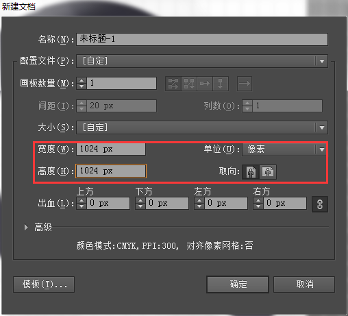
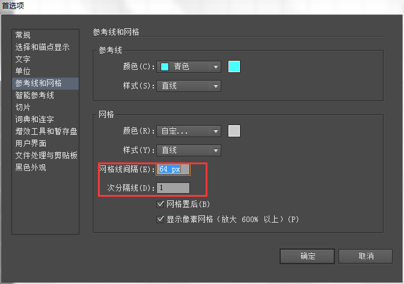
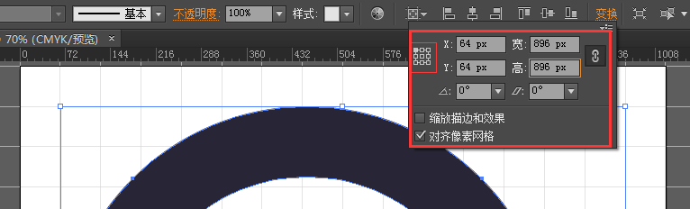
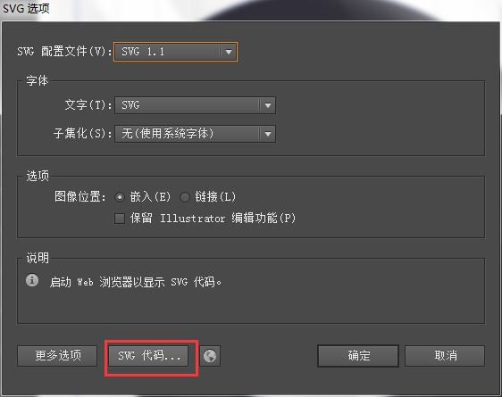
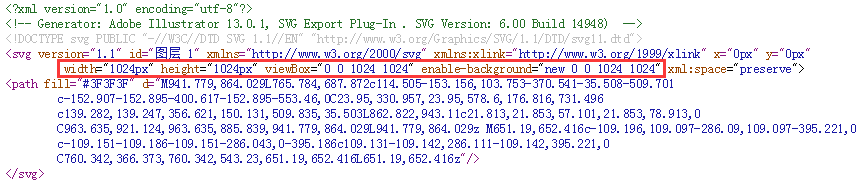

为什么要使用图标字体（Icon font）？
- 可以方便地修改图标的颜色、大小，并且不会失真
- 可以应用 CSS 视觉特效，如：缩放、旋转、阴影、渐变等
- 兼容性好，支持 IE6+
- 维护方便，不再需要把小图片拼成雪碧图
- 体积小，WOFF 字体要比 SVG 图像小 50% 以上
BizIcon 是什么？
BizIcon 是一套图标字体管理与生成方案，它包含：
并具有如下特点：
- 自动生成 EOT、TTF、WOFF、SVG 四种主流格式的 Web 字体
- 字体中的图标可以自由地定制
- CSS、HTML代码自动生成，屏蔽浏览器兼容性
- UED 维护图标库，与 FE 协作成本低
- 发布至 npm ，便于工程化管理
Step1. 安装 biz-icon
- 首先你需要安装 NodeJS 环境：下载地址
- 安装 grunt：
$ npm install grunt-cli -g
安装 biz-icon：
$ npm install biz-icon
Step2. 下载 SVG 图标
- 进入图标库，选择分类，批量下载选中的图标
- 将图标解压到 biz-icon/svg/
Step3. 修改配置文件：icons.json
{
"fontName": "BizIcon", // 字体名称
"fontDest": "font/", // 字体文件夹
"cssDest": "css/biz-icon.css", // CSS 路径
"cssFontsPath": "../font/" // 字体相对于 CSS 的路径
"root": "svg/", // SVG 根目录
"icons": [
{
"name": "search", // CSS 后缀名
"svg": "search.svg" // SVG 文件名
},
...
]
}
Step4. 生成图标字体
$ grunt
1. 画布尺寸：1024 x 1024px，分成 16 等份，每份宽 64px


2. 图标尺寸：896 x 896px，水平垂直居中，四周各留 64px 空白

3. 保存成 SVG 前，检查源码，确认几个数值是否如图所示：

